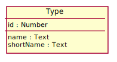
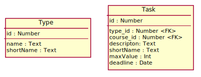
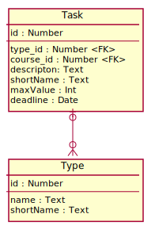
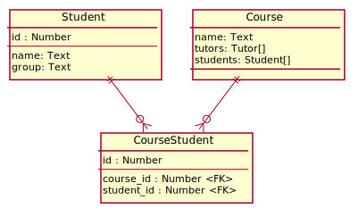
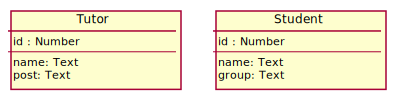

<!doctype html>
<html>
	<head>
		<meta charset="utf-8">
		<title>Проектирование ORM</title>

		<link rel="stylesheet" href="../dist/reset.css">
		<link rel="stylesheet" href="../dist/reveal.css">
		<link rel="stylesheet" href="../dist/theme/beige.css" id="theme">

		<!-- Theme used for syntax highlighted code -->
		<link rel="stylesheet" href="../plugin/highlight/github.css" id="highlight-theme">

		<style>
			.container{
				display: flex;
			}
			.col{
				flex: 1;
			}
		</style>
	</head>
	<body>
		<div class="reveal">
			<div class="slides">

                <section data-markdown data-separator="!~~~!" data-separator-vertical="~~~" > 
<script type="text/template">

## ORM. Введение

~~~

### Понятие ORM

ORM (Object-Relational Mapping) – технологии программирования, 
обеспечивающие хранение объектов ООП в реляционной базе данных

Реализации ORM:

- JPA (Java Persistence API) – спецификация.
- Hibernate – фреймворк.
- Много их.

~~~

### Проектирование ORM

- Проектирование ORM заключается в разработке согласованных UML диаграмм классов и ER-диаграмм.
- Порядок разработки (от UML к ER или наоборот) – зависит от разработчика (а должен от задачи).
- Генерация схемы таблиц база данных и запросов к ним с помощью фреймворков часто не эффективна.

~~~

### Проектирование ORM в курсе

- В практической части курса будем создавать ER&#8209;диаграммы по UML.
- Для отображения ER-диаграмм будем использовать PlantUML.

!~~~!

## ER диаграммы

~~~

### Сущность Task

<div class="container">
	<div class="col" data-markdown>

```
hide circle
skinparam minClassWidth 170

entity Type {
	id : Number
	--
	name : Text
	shortName : Text
}
```

</div>
	<div class="col">
		
	</div>
</div>

~~~

### Сущность Type

<div class="container">
	<div class="col" data-markdown>

```
entity Task {
	id : Number
	--
	type_id : Number < FK >
	course_id : Number < FK >
	descripton: Text
	shortName : Text
	maxValue : Int
	deadline : Date
}
```

</div>
	<div class="col">
		
	</div>
</div>

~~~

### Отношение One-To-Many

<div class="container">
	<div class="col" data-markdown>
<code>
Task |o--o{ Type
</code>

</div>
	<div class="col">
		
	</div>
</div>

~~~

### Обозначения кардинальности

| Type         | Symbol |
|--------------|--------|
| Zero or One  | \|o--  |
| Exactly One  | \|\|-- |
| Zero or Many | }o--   |
| One or Many  | }\|--  |

!~~~!

## Разработка ORM

~~~

### Вводные идеи ORM

- Классу, как правило, соответствует таблица, 
колонки которой соответствуют полям класса.
- Отношения между классами могут быть реализованны:
	- в виде колонок таблиц (в одной или двух таблицах);
	- в виде дополнительных таблиц.

~~~

### Проектирование отношений

- При переводе отношений классов нужно использовать идеи, 
используемые при проектировании баз данных.
- Основная идея: база данных хранит факты о системе.
- Например: 
	- факт: задача имеет такой-то тип;
	- реализация: таблица задача имеет поле для хранения ее типа.

~~~

### ORM фреймворки

- Создают схему таблиц используя некоторые правила для преобразования отношений классов.
	- Схема таблиц получает не всегда удачной.
- Генерируют функции для запросов к базе данных объектов из таблиц.
	- Запросы часто получаются не эффективными.
- Позволяют настраивать алгоритм генерации схемы таблиц.
- Позволяют дописывать запросы.

!~~~!

## Отображение ассоциации классов

~~~

### Реализация ассоциации в ООП

- Ссылка на другой класс:
	- One-To-One:
		- ссылка в одном классе;
		- ссылка в обоих классах.
	- One-To-Many:
		- ссылка со стороны Many.
- Коллекция объектов:
	- One-To-Many:
		- коллекция со стороны One.
	- Many-To-Many:
		- коллекция с одной стороны;
		- коллекция с двух сторон.

~~~

### Отображение ассоциации 

- Ссылка в классе обычно отображается в виде внешнего ключа.
- Коллекция в классе отображается в виде дополнительной таблицы.
- Обычно рассматривают отображение отношений в ER напрямую, без их реализации в классах.

~~~

### Пример ассоциации

<div class="container">
	<div class="col" data-markdown>

```
entity Student {
	id : Number
}
entity Course {
	id : Number
}
entity CourseStudent {
	id : Number
	--
	course_id : Number < FK >
	student_id : Number < FK >
}
Course ||--o{ CourseStudent
Student ||--o{ CourseStudent
```

</div>
	<div class="col">
		
	</div>
</div>

!~~~!

## Отображение наследования

~~~

### Наследование

Три стратегии хранения данных:

- Таблица БД для каждого класса иерархии.
- Таблица БД для листовых классов иерархии.
- Одна таблица на все классы иерархии.

~~~

### Наследование: таблица для каждого класса

- Возможна нормализация
- Выборка может потребовать несколько SQL запросов 
(или запросы с Joint, что требует доп. работы с фреймворком) 

~~~

### Наследование: одна таблица на иерархию классов

- Быстрая выборка
- Нулевые поля
- Сложность изменений

~~~

### Наследование: таблицы для некоторых классов

- Компромиссный вариант
- Количество таблиц определяется предполагаемыми запросами

~~~

### Пример наследования

<div class="container">
	<div class="col" data-markdown>

```
entity Tutor {
	id : Number
	--
	name: Text
	post: Text
}
entity Student {
	id : Number
	--
	name: Text
	group: Text
}
```

</div>
	<div class="col">
		
	</div>
</div>

</script>
                </section>

			</div>
		</div>

		<script src="../dist/reveal.js"></script>
		<script src="../plugin/notes/notes.js"></script>
		<script src="../plugin/markdown/markdown.js"></script>
		<script src="../plugin/highlight/highlight.js"></script>
		<script src="../plugin/menu/menu.js"></script>
		<script>
			Reveal.initialize({
				hash: true,
				plugins: [ RevealMarkdown, RevealHighlight, RevealNotes, RevealMenu ],
				menu: {
					custom: [{
						title: 'Home',
						icon: '<i class="fa fa-home">',
						src: '../menu.html'
					}]
				}
			});
		</script>
	</body>
</html>
